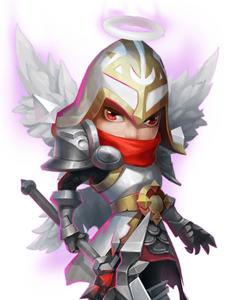

| No | Hero | Biografi |
|---|---|---|
| 1 | Menurut Legenda, Zephyrica adalah pelindung Barren Sands. Penduduknya percaya bahwa dia telah menciptakan angin padang pasir, bahkan ketika dia tertidur selama berabat-abat. Legenda juga mengatakan bahwa ketika dia terbangun, dia akan memanggil angin puyuh tanpa henti untuk menghancurkan kerajaan musuh, dan menguasai Narcia dari Barren Sands. | |
| 2 | Dikutuk untuk terus tinggal di antara yang hidup, satria yang tidak dapat mati ini mengembara di dunia, mencari seseorang yang pada akhirnya dapat memberikan istirahat abadi kepadanya. | |
| 3 | Ronin adalah seorang yang misterius yang berasal dari timur jauh...Seseorang serdadu tanpa tuan yang mengurangi tanah asing hanya dengan pedang dan bajanya. Kabar angin akan kemampuanya terdengar di manapun dia pergi. Kabarnya, ayunan pedangnya sangatlah cepat hingga tak kasat mata. Tiada satupun penantang yang hidup untuk bercerita tentang si ahli pedang ini. | |
| 4 | Dia adalah personifikasi dari rasa takut. Darah membeku ketika dia hadir, sedangkan bisikan dan tawa serammya menghapus rasa waras. korbannya hidup di rasa takut yang tak kujung usai - nasib yang lebih parah dari kematian. | |
| 5 |  | Dia bertempur, menghancurkan air mata dan berdarah di pertempuran abadi melawan iblis. Namun bagi semua ksetiaan itu, ia dikhianati dan dikucilkan oleh para saudaranya. Tanpa anda lagi yang tersisa selain tombak dan darah agungnya, Michael pergi dalam pengembaraan untuk menuntut balas. |
| 6 | Seekor Phoenix yang di bangkitkan bukan dari api, namun dari es. Melalui batu ajaib, burung kuno ini memiliki kekuatan untuk menciptakan salju dan embun beku. Kekuatannya yang besar membuatnya jadi buruan, meskipun belum ada yang berhasil memburunya karena kegesitan dan habitatnya yang keras. ketika perang terjadi, burung legendaris ini pun tak bisa bersembunyi lagi. Murka akan peperangan para penduduk, Lazulix berjanji akan mengubur kekacauan di bawah badai salju yang tak berakhir demi awal baru kehidupan di Narcia. | |
| 7 | Tumbuh besar di Burning Ravine, kekuatan magma berkembang dalam diri lavanica meskipun dia bukan salah satu dari naga api. Sebagai keturunan wyrm kuno yang telah menjaga benua terbentuk dan berkembang, dia akan terus menjaga masa depan negerinya. | |
| 8 | Dapat dikatakan bahwa Crystal Wraith lahir untuk memanipulasi kekuatan es. Kebaikkannya pada orang-orang yang mencari perlindungan padanya hanyalah sebuah kedok untuk misi utamanya: menemukan tubuh sempurna untuk peroyek "patung es realistiknya". | |
| 9 | Dilabeli sebagai pengecut karena lari dari medan perang, Cosmo menolak untuk manyampaikan cerita versinya. Anehnya, kelemahannya langsung hilang ketika dia memengang tongkatnya. Dia menjadi seorang Pelindung yang berani, memandu jiwa-jiwa ke alam hilang. Cosmo menatap lama tongkatnya tanpa suara, mengobservasi tiap gerakan energinya. Mungkin dia melihat sesuatu yang tak dilihat orang lain... | |
| 10 | Roh Binatang malam musim dingin sangatlah agung namun susah ditemukan. Konon dia bisa ditemukan dimana salju jatuh, namun tidak banyak yang melihat makhluk ini. |